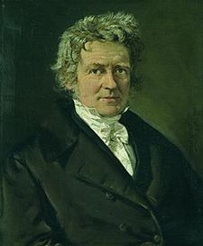

BESSEL
Vào một ngày mùa thu lạnh lẽo năm 1829, môt cỗ xe ngựa kéo năng nề lăn bánh cót két qua các đường phố rải đá cuội của Konigsberg ở Đông phổ. Cỗ xe chở một kính viễn vọng mới cho đài thiên văn nằm trên thị trấn. Khi xe ì ạch leo lên đồi, Friederich Wilhelm Bessel(1) – giám đốc đài thiên văn – sốt ruột nhìn nó. Ông thốt lên:
- Rốt cuộc rồi kính viễn vọng Fraunhofer của mình cũng đã đến. Để mình xem liệu nó co tốt như người ta nói hay không.

Friedrich Wilhelm Bessel.
Joseph von Fraunhofer là nhà chế tạo kính viễn vọng người Áo, ông có ý định thiết kế các kính viễn vọng khúc xạ sẽ hoạt động tốt hơn các gương phản xạ của Herschel. Bằng cách dùng các thấu kính đặc biệt hiệu chỉnh màu, ông đã thành công. Vật kính nằm phía trước của kính viễn vọng Fraunhofer thu ánh sáng nhiều hơn so với môt gương có kích thước gấp đôi, do các gương kim loại sử dụng lúc bấy giờ không hiệu quả. Chẳng bao lâu, các nhà thiên văn chuyên nghiệp ở khắp nơi đều muốn có một kính viễn vọng Fraunhofer.

Cách hoạt động của kính viễn vọng khúc xạ
Ánh sáng được thu vào bằng sự kết hợp gần như không màu của hai thấu kính làm bằng hai loại thủy tinh khác nhau. Kế đến, ánh sáng được hội tụ (nơi các tia giao nhau) và được thị kính phóng đại. Các thị kính khác nhau sẽ cho ra các độ phóng đại khác nhau.
Trong đó có Bessel. Kính viễn vọng khúc xạ đặ biệt thích hợp để làm các phép đo tỉ mỉ, và một kính viễn vọng Fraunhofer sẽ mang lại những kết quả chính xác hơn bất kỳ loại nào khác. Mỗi nhà thiên văn đều muốn có các dụng cụ chính xác, nhưng riệng Bessel đánh giá cao tính chính xác trên hết mọi thứ. Từ lâu, ông đã thôi không tin vào bất cứ dụng cụ nào. Ông thường nói:
- Mỗi kính viễn vọng được chế tạo hai lần. Trước tiên trong xưởng và sau đó bởi nhà thiên văn.
Với lòng kiên trì bất tận, ông luôn kiểm tra tính năng các dụng cụ của mình và xác định bất kỳ sự không chính xác nào dù là nhỏ nhất.
Trang bị đầu tiên trong đài thiên văn của ông gồm có môt vòng kinh tuyến, do một người Anh là Cary chế tạo. Sử dụng để đo khoảng cách biểu kiến giữa hai sao, kính viễn vọng này xoay trên một trục phải vuông góc chuẩn xác với các thấu kính của nó. Nhưng Bessel lại phát hiện rằng nó không vuông góc. Tuy nhiên, ông tìm ra cách bù đắp cho thiếu sót này.
Ông cũng khám phá ra các nguồn sai lệch khá. Khí quyển giống như một lăng kính, nó khúc xạ ánh sáng từ các sao đến Trái đất. Nhưng không phải lúc nào nó cũng khúc xạ ánh sáng với lượng như nhau, sự khúc xạ thay đổi theo nhiệt độ và áp suất của không khí. Bessel sửa đổi các công thức ban đầu mà ông đã nghĩ ra để tính đến các thay đổi này. Ông đưa ra những số liệu hiệu chỉnh được các nhà thiên văn khắp nơi nồng nhiệt tiếp nhận.
Bessel cũng không hài lòng với Trái đất được xem như một bệ để từ đó quan sát các sao, không thể hy vọng nó đứng yên. Trục mà Trái đất quay trên đó thay đổi theo hướng và hơi nghiêng. Tuy nhiên, ông vẫn tìm cách để đưa ra hiệu chỉnh đối với các chuyển động này.
Giờ đây, Bessel cũng có được một kính viễn vọng chính xác. Chẳng mấy chốc, nó được đặt lên một khung nặng bằng gỗ sồi trong cái tháp được xây dựng đặc biệt để chứa nó. Ông kính dài 3m bằng gỗ thường dát gỗ dái ngựa đánh bóng ánh lên như đồng hun. Bessel trìu mến sờ vào kính viễn vọng và ngạc nhiên thấy rằng ông có thể đung đưa dụng cụ nặng trĩu này theo mọi hướng bằng cái đẩy của một ngón tay, là do có các đối trọng lắp bên trong. Hơn thế nữa, còn có một mô tơ quay tương thích với đồng hồ, giữ cho kính viễn vọng tự động nhắm vào một sao trong nhiều giờ liền, bất kể sự quay của Trái đất.
Còn vật kính thì sao? Dùng để thu ánh sáng, nó được làm bằng loại thủy tinh kết hợp hiệu chỉnh màu và rộng 16cm. Bessel chăm chú nhìn nó bằng đôi mắt tinh tường – đôi mắt mà khi ông còn là một cậu bé 13 tuổi, đã cho ông thấy một sao kép, trong khi các nhà thiên văn chỉ thấy có một sao. Sau đó, ông thở một tiếng khoan khoái: các thấu kính là thủy tinh không bị khiếm khuyết, thuộc loại tốt nhất mà ông từng thấy.
Ông nghĩ đến việc lắp đặt các thấu kính. Trong thời tiết nóng, các thấu kính sẽ giãn nở một tý. Ông thoáng nghi ngờ, nhưng phát hiện rằng Fraunhofer đã làm một khung đàn hồi đặc biệt có thể tháo rời để thích ứng với các thấu kính khi chúng giãn nở.
Bessel thốt lên: “Rất tuyệt!”. Rõ ràng là Fraunhofer đã tính đến từng tình huống chi li.
Tuy nhiên, ông vẫn kiểm tra toàn bộ dụng cụ. Khi công việc xong xuôi, ông rất hài lòng. Fraunhofer đã đoán trước mọi thứ - ít ra là mọi thứ, ngoại trừ một chi tiết nhỏ. Thang của dụng cụ dùng để đo khoảng cách trong trường nhìn sẽ thay đổi rất ít về chiều dài theo sự biến thiên của nhiệt độ không khí. Nhưng Bessel biết ông có thể đo các thay đổi này và làm các hiệu chỉnh cần thiết.
Ông rất vui mừng vì có được một trong những kính viễn vọng tinh xảo nhất thế giới. Đối thủ gần nhất là một kính Fraunhofer khác, chế tạo cho F.G.W Struve tại đài thiên văn Dorpat ở Nga. Nhưng kính ấy không quá tốt để làm các phép đo chính xác.
Bessel tự nhủ:
- Với kính viễn vọng này, mình có thể thử tìm ra khoảng cách của một sao xa ngần nào!
Bessel biết rằng kể từ thời của Newton, con người đã tìm cách làm điều này, nhưng không thành công. Lý do là phải cần đến các phép đo rất nhỏ.
Cách duy nhất xem ra có thể thực hiện được để tìm khoảng cách của một sao là đo thị sai hàng năm của nó. Đó là sự dịch chuyển biểu kiến vị trí của nó trong năm khi so sánh với các sao có vẻ cố định ở xa hơn thấy được trong cùng một vùng trên bầu trời. Hiệu ứng này là do sự thay đổi góc mà tại đó, một người quan sát trên Trái đất nhìn các sao trong hành tinh hàng năm của Trái đất quay quanh Mặt trời. Loại hiệu ứng này cũng xảy ra nếu một người giơ lên môt ngón tay và nhìn vào nó, trước tiên bằng một mắt và sau đó bằng mắt kia. Ngón tay dường như xê dịch ngang nếu so sánh với các vật phía sau
Do quỹ đạo của Trái đất có đường kính 289.674.000km, nên cứ mỗi sáu tháng Trái đất sẽ cách xa 289.674.000km từ chỗ mà nó đứng sáu tháng trước, và chúng ta đang nhìn thấy bất kỳ sao nào được ấn định từ một vị trí khác hẳn. Sử dụng thực tế này, sự xê dịch theo chu kỳ sáu tháng của một sao so với các sao trong cảnh nền, bằng hình học đơn giản sẽ cho biết khoảng cách của nó đến Trái đất. Sự xê dịch dường như càng lớn thì ngôi sao phải càng gần. Tuy nhiên, ngay cả sao gần nhất cách xa Trái đất đến mức chúng ta không thể nhận ra sự xê dịch bằng mắt thường.
Vào thời của Newton, các nhà thiên văn xoay kính viễn vọng thô sơ của họ đến các sao, với hy vọng các sao này cho biết sự xê dịch nhờ thị sai. Lúc đầu, họ tin rằng họ đã thành công; nhưng về sau, James Bradley, nhà thiên văn hoàng gia thứ ba, chứng minh rằng tất cả những gì họ đang đo đều là quan sát sai lệch.
Bằng cách cải tiến kỹ thuật, có tính đến loại sai lệch này sang loại sai lệch khác, Bradley cố gắng để thu được độ chính xác một giây (đơn vị đo góc). Độ chính xác này cao hơn 200 lần so với tiêu chuẩn bình thường của Tycho Brahe, nhưng nó vẫn chưa đủ đúng để cho biết bất cứ thị sai nào.
Sau đó, các nhà thiên văn thôi không thử trong một thời gian, Struve thậm chí còn chứng minh rằng với sự hiện diện của các dụng cụ cũng không thể đo những thay đổi rất nhỏ có liên quan. Tuy nhiên, đấy là trước khi ông có kính viễn vọng Fruanhofer.
Bessel cũng vậy, giờ đây ông được trang bị bằng một kính viễn vọng Fruanhofer, ông cảm thấy sẵn sàng để thử làm các phép đo cần thiết. Tuy vậy, ông muốn chọn một sao để nó sẽ cho thấy thị sai cực đại. Ông trầm ngâm nói một mình:
- Sao càng gần Trái đất thì thị sai càng lớn. Nhưng làm thế nào mà mình có thể quyết định sao nào là sao ở gần?
Để xác định điều này, ông làm một công việc thăm dò nhỏ. Bởi vì có lúc, các nhà thiên văn đã nhận ra rằng cái gọi là các sao “ cố định” – cố định vì tương quan giữa chúng với nhau trên bầu trời vẫn giữ nguyên – thật ra hoàn toàn không cố định. Người ta có thể nhìn thấy một số trong chúng chuyển động đều đặn băng ngang bầu trời. Do chúng ở quá xa, sự chuyển động này là rất nhỏ, nhưng nó có thể đo được.
Năm 1792, một tu sĩ người Ý tên là Giuseppe Piazzi đã chỉ ra rằng có một sao di chuyển đặc biệt nhanh. Nằm trong chòm sao Cygnus (Thiên Nga). Nó được đặt tên là Cygni 61. Các nhà thiên văn đặt biệt danh cho nó là “sao bay”. Không phải nó di chuyển đủ nhanh để nhìn thấy bằng mắt thường, mà từ thời của Kepler cho đến ngày nay nó chỉ di chuyển một khoảng cách tương đương với chiều rộng biểu kiến của Mặt trăng. Nhưng dù sao, Bessel vẫn quyết định rằng vận tốc thấy được như vậy và chuyển động cho biết Cygni 61 là ở gần. Ông lập luận:
- Có lẽ tất cả các sao đều thực sự chuyển động với vận tốc như nhau. Tuy nhiên, các sao gần hơn dường như chuyển động nhanh hơn, chỉ vì chúng ở gần.
Đấy là sự suy diễn táo bạo, nhưng nó cho ông một lý do đúng để chọn sao này. Ngòai ra, Cygni 61 gần sao Bắc cực, do đó nó sẽ vẫn nằm trên đường chân trời phần lớn thời gian trong năm.
Năm 1834, sau khi hoàn tất một chương trình cho công việc khác, Bessel mở cuộc tấn công đầu tiên của ông vào vấn đề này. Như là các điểm quy chiếu để đánh giá sự xê dịch hàng năm của sao, ông chọn hai sao có cấp sáng 11. Tuy nhiên, ông sớm thấy rằng rất khó quan sát các sao mờ này một cách chính xác. Ông quyết định:
- Mình sẽ phải dùng các sao quy chiếu mới.
Nhưng giờ đây, các quan tâm khác tiếp tục chiếm nhiều thời gian của ông. Năm 1835, sao chổi Halley tái xuất hiện, bị mê hoặc, Bessel quan sát nó vào mỗi đêm trời trong. Sau đó, ông thực hiện công việc phức tạp là tính toán chiều dài của một độ ( đơn vị đo góc) trên bề mặt Trái đất, tức 1/360 chu vi của nó.
Mãi đến tháng Tám năm 1837, ông mới có thể tập trung vào các phép đo thị sai. Đối với các sao quy chiếu mới, ông chọn ra hai sao có cấp sáng giữa 9 và 10. Một sao nằm trên đường di chuyển của Cygni 61, sao kia nằm vuông góc với đường này.
Lần lượt hướng kính viễn vọng vào từng sao và đồng thời vẫn giữ Cygni 61 trong tầm nhìn, ông đọc thẳng một mạch các khoảng cách góc giữa chúng và Cygni 61. Các vít của dụng cụ đo được điều chỉnh tinh tế đến mức ông có thể đo chính xác 1/20 của giây góc, tức nhỏ hơn bề rộng của một đầu đinh ghim nhìn từ khoảng cách 3,2 km. Ông nhận xét:
- Ngôi sao nằm trên đường di chuyển cách xa 11 phút 46 giây. Sao kia cách xa 7 phút 42 giây.
Sau đó, mỗi đêm khi bầu trời quang đãng, ông tạm biệt vợ và ba con rồi bước đi trong thị trấn ngủ yên để đến đài thiên văn. Ở đấy, ông lại nhìn vào các sao và cẩn thận ghi chép những thay đổi về vị trí mà ông thấy. Vào những đêm bình thường, ông lặp lại mỗi phép đo 16 lần; khi không khí đặc biệt ổn định, ông làm phép đo thậm chí nhiều lần hơn.
 .
.
Ban ngày, ông tự giam mình trong phòng làm việc và cặm cụi với những con số, loại bỏ dần các quan sát sai lệch mà ông có tính đến. Ông còn phải hiệu chỉnh chuyển động thực sự của “sao bay”; để làm điều này, ông tranh thủ được sự giúp đỡ của một cựu phụ tá tên là Friedrich Argelender. Làm việc tại đài thiên văn Bonn, Argelender sử dụng kết quả của quan sát sao đã được thực hiện năm 1755 và 1830 để tìm ra vận tốc di chuyển.
Bessel biết rằng hiệu ứng thị sai sẽ khiến cho sao dường như di chuyển theo một hình elip rất nhỏ trong năm. Khi mải mê nghiên cứu các con số mỗi ngày, thay đổi và hiệu chỉnh chúng, ông hăm hở quan sát bất cứ dấu hiệu nào của hình elip này. Trong một tháng, ông đinh ninh mình đã nhận ra nó.
Tuy nhiên, đối với giới khoa học, ông không nói gì cả. Trước tiên là ông cần các kết quả của trọn một năm.
Mùa thu đến, Bessel leo lên tháp đài thiên văn không có lò sưởi. Tuyết đầu mùa đông đã rơi trên thị trấn Konigsberg, tiếp đến là các sao đóng băng. Bessel giờ đây đã 54 tuổi, vẫn kiên trì với các quan sát của mình. Mỗi đêm, ông co ro trong tháp, những ngón tay tê cóng làm các hiệu chỉnh tỉ mỉ, cố không để hơi thở phủ mờ thị kính.
Sáu tháng đã trôi qua, ông biết rằng mình thành công. Sự thay đổi thị sai rõ ràng hiện ra trong các con số của ông. Nhưng ông đi ngay vào việc quan sát, kiên trì giải quyết để có được dữ liệu của trọn một năm.
Cuối cùng, vào cuối mùa hè năm 1838, ông có đủ các quan sát và tính toán mà ông cần. Để đảm bảo hơn, ông kiểm tra tất cả chúng nhằm tránh các sai lệch có thể có. Đến tháng mười hai. Ông hãnh diện thông báo:
- Thị sai hàng năm của Cygni 61 là 0,3136 giây. Điều này có nghĩa là nó ở xa 667.000 lần so với Mặt trời. Ánh sáng phải mất 10,3 năm để di chuyển từ sao này đến Trái đất.
Ông viết ra các kết quả của mình một cách thản nhiên, nhưng các con số lại gây sửng sốt. Các nhà thiên văn ngỡ rằng khoảng cách rất lớn, tuy vậy, họ vẫn kinh ngạc về sự bao la của vũ trụ. Do ánh sáng di chuyển với vận tốc 289.674km/giây, thành thử 10,3 năm tương ứng với 96,56 tỉ tỉ km. Đấy là một trong những sao gần nhất!
Ngày nay, chúng ta biết rằng ngay cả số liệu của Bessel cũng không hoàn toàn chính xác. Thị sai hiện đại định trị số của Cygni 61 chỉ vào khoảng 0,30 giây, tương ứng với khoảng cách 106,21 tỉ tỉ km. Tuy nhiên, số liệu của Bessel được coi là chính xác nhất trong một thời gian dài.
Ngay sau khi ông thông báo kết quả, hai nhà thiên văn khác đưa ra số liệu về các sao khác. Thomas Henderson, nhà thiên văn hoàng gia của Scotland, đã làm các phép đo với sao Alpha Centauri; và F.G.W Struve ở đài thiên văn Dorpat đã dùng kính viễn vọng Fraunhofer để có được trị số của sao Vega. Tuy nhiên, về sau người ta thấy rằng cả hai kết quả đều cho ra số quá lớn.
Với các phép đo này, con người bắt đầu hiểu được sự biệt lập của các sao. Sao gần nhất là Cận tinh trong chòm Nhân mã, cách Trái đất 4,3 năm ánh sáng. Một tàu vũ trụ hiện đại với vận tốc 40.232km/giờ có thể di chuyển từ Trái đất đến Mặt trăng với khoảng cách 386. 232km trong 10 giờ, và trong 20 năm sẽ đến rìa của hệ Mặt trời. Tuy nhiên, nó phải giữ vận tốc đó trong khoảng 120.000 năm để đến Cận tinh.
Ngày nay, các nhà thiên văn sử dụng các bức ảnh chụp nhiều lần khác nhau để tìm ra sự thay đổi thị sai. Tính số trung bình các kết quả của nhiều bức ảnh, họ đo được các thay đổi thị sai với độ chính xác 1/200 của giây góc.Các khoảng cách của khoảng 5.000 sao đã được xác định bằng cách này. Tuy nhiên, đa số các sao ở xa Trái đất đến mức người ta không dùng phương pháp này.
Sau khi giải quyết Cygni 61, Bessel chuyển sang vấn đề khác. Các nhà thiên văn ở khắp nơi bắt đầu xem xét cách vận hành kỳ lạ của Thiên Vương tinh, hành tinh do William Herschel phát hiện. Một quỹ đạo đã được tính toán cho hành tinh này, trong một thời gian,con người tin rằng nó đang theo quỹ đạo được vẽ ra chính xác. Thế rồi, năm 1825, các nhà thiên văn chú ý rằng Thiên Vương tinh đang tiến nhanh về phía trước so với các vị trí được mong đợi của nó. Một vài nhà thiên văn cho là phải vẽ lại quỹ đạo này.
Nhưng trước khi họ làm được điều đó thì Thiên Vương tinh bắt đầu di chuyển chậm dần. Đến năm 1830, nó lại trở lại quỹ đạo đã tiên đoán cho nó. Xem ra, các tính toán ban đầu không đến nỗi sai lệch. Nhưng Thiên Vương tinh tiếp tục di chuyển chậm lại, trong hai năm kế tiếp, nó hầu như tụt lại 0,5 phút góc. Đây là một sai số rất lớn.
Với hy vọng tìm ra bí ẩn, Bessel tiếp nhận một nhà thiên văn trẻ người Anh có triển vọng tên là Flemming làm phụ tá. Bessel quyết định bước đầu tiên hướng đến việc tìm một giải đáp là kiểm tra độ chính xác của tất cả các quan sát hiện có về Thiên Vương tinh, ông cần có sự giúp đỡ trong công việc khó nhọc này.
Đến năm 1840, Bessel tin chắc vào các kết quả của mình. Ông nói trong một buổi tiếp kiến tại Konigsberg:
- Những khác biệt hiện tại, trong một số trường hợp vượt quá một phút góc là không phải do sai lầm của các quan sát.
Như vậy có nghĩa là Thiên Vương tinh chắc chắn đang di chuyển chậm so với chương trình tính toán cho nó. Nhưng tại sao? Bessel nói:
- Tôi cho rằng nguyên nhân là một hành tinh chưa được biết, mà lực hút của nó có ảnh hưởng đến Thiên Vương tinh!
Chẳng bao lâu sau khi đưa ra tiên đoán táo bạo ấy, Bessel ngã bệnh và không thể tiếp tục với công việc. Tuy nhiên, đã có hai nhười đàn ông trẻ, một ở Anh và một ở Pháp, đảm nhận vấn đề này.
Chú thích:
(1) Friedrich Wilhelm Bessel (1784-1846): Nhà thiên văn và trắc địa người Đức, tên ông được đặt cho hàng loạt các hàm số có tầm quan trọng thực tiễn rất lớn trong toán vật lý. Ông là một trong số rất ít các nhà thiên văn đã xác định thị sai các sao đầu tiên, đại lượng để xác định khoảng cách tới các sao ở xa.